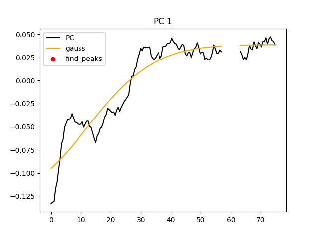
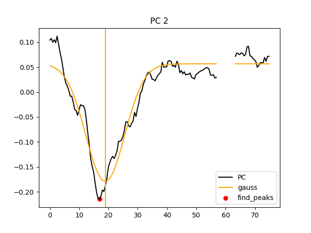
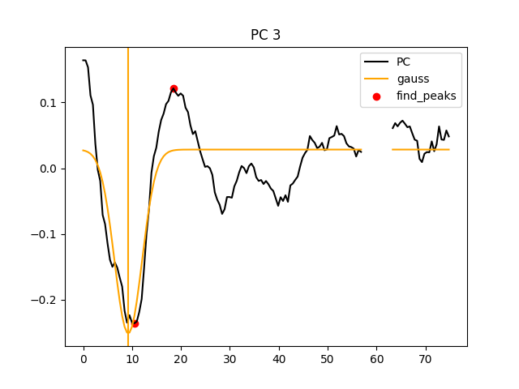
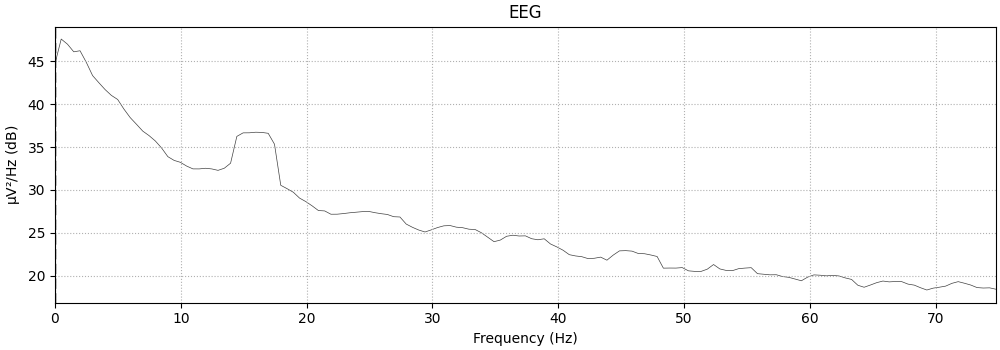
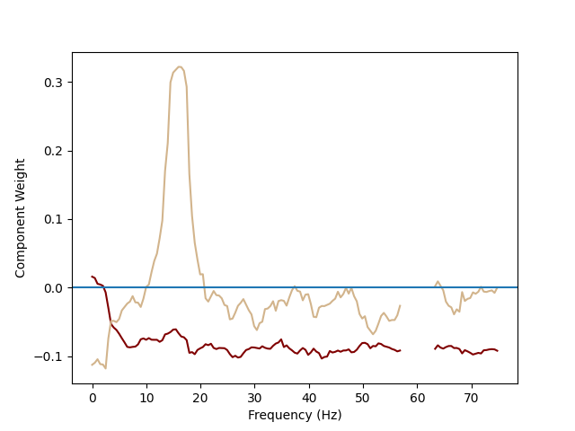

Note
Go to the end to download the full example code
Power Spectral Density Analysis: Spectral Decoupling¶
The objective of this tutorial is to describe the basics of power spectral density and what it can tell us about underlying brain activity. Power spectral density represents time-series data as the magnitude of sine and cosine coefficients of the Fourtier Transform; how much of each different frequency of sinusoidal wave best represents your time-series data. While, understandably, this method is great at detecting oscillatory neural activity (activity that waxes and wanes periodically at a particular frequency or rhythm), interestingly, it also yields important information about aperiodic neural activity through the background or broadband changes in power. Brain activity is consistently observed to have exponentially decreasing background power, like pink noise, with oscillatory peaks superimposed, like the peaks in a nuclear magnetic resonance (NMR) spectroscopy scan. The peaks can tell us about oscillatory (periodic), synchronous brain activity and the background power can tell us about non-oscillatory (aperiodic), asynchronous brain activity. (For contrast, an event-related potential, the deflection in an electrophysiology recording after an event is shown, is aperiodic because it doesn’t repeat but synchronous because it is synchronized by the event). This tutorial will demonstrate how this interpretation of power spectral density can be used to study a movement task. Unfortunately, since this method was demonstrated on electrocortigraphy (ECoG) which can discriminate the location of brain activity at much better resolution than scalp electroencephalography (EEG), we won’t be able to show that, during movement, the broadband changes in power are confined to a more specific brain area (the brain area that controls that particular movement) whereas the oscillation is spread across a large portion of primary motor cortex (the gyrus that, when stimulated, causes movement of different body parts depending on the location of stimulation) but please read [1] for more details.
# Authors: Alex Rockhill <aprockhill@mailbox.org>
#
# License: BSD-3-Clause
import matplotlib.pyplot as plt
import numpy as np
from sklearn.decomposition import PCA, FactorAnalysis
from scipy.optimize import minimize
from scipy.signal import find_peaks
import mne
from mne.datasets import eegbci
Load the data: from Identify EEG Electrodes Bridged by too much Gel we can see that subject 5
has no bridging and from the documentation in mne.datasets.eegbci.load_data()
we can pick the runs where the subject was performing a movement task
(3, 5, 7, 9, 11, 13).
raw_fnames = eegbci.load_data(subject=5, runs=[3, 5, 7, 9, 11, 13])
raws = [mne.io.read_raw(f, preload=True) for f in raw_fnames]
# join files and standardize format
raw = mne.concatenate_raws(raws)
eegbci.standardize(raw) # set channel names
raw.set_montage("standard_1005")
# make epochs
events, event_id = mne.events_from_annotations(raw)
# four seconds of movement/rest; start 1 s after onset and end 1s before
# offset for just movement/rest
epochs = mne.Epochs(
raw, events, tmin=1, tmax=3, reject=dict(eeg=4e-4), baseline=None, preload=True
)
Extracting EDF parameters from /home/alexrockhill/mne_data/MNE-eegbci-data/files/eegmmidb/1.0.0/S005/S005R03.edf...
EDF file detected
Setting channel info structure...
Creating raw.info structure...
Reading 0 ... 19679 = 0.000 ... 122.994 secs...
Extracting EDF parameters from /home/alexrockhill/mne_data/MNE-eegbci-data/files/eegmmidb/1.0.0/S005/S005R05.edf...
EDF file detected
Setting channel info structure...
Creating raw.info structure...
Reading 0 ... 19679 = 0.000 ... 122.994 secs...
Extracting EDF parameters from /home/alexrockhill/mne_data/MNE-eegbci-data/files/eegmmidb/1.0.0/S005/S005R07.edf...
EDF file detected
Setting channel info structure...
Creating raw.info structure...
Reading 0 ... 19679 = 0.000 ... 122.994 secs...
Extracting EDF parameters from /home/alexrockhill/mne_data/MNE-eegbci-data/files/eegmmidb/1.0.0/S005/S005R09.edf...
EDF file detected
Setting channel info structure...
Creating raw.info structure...
Reading 0 ... 19679 = 0.000 ... 122.994 secs...
Extracting EDF parameters from /home/alexrockhill/mne_data/MNE-eegbci-data/files/eegmmidb/1.0.0/S005/S005R11.edf...
EDF file detected
Setting channel info structure...
Creating raw.info structure...
Reading 0 ... 19679 = 0.000 ... 122.994 secs...
Extracting EDF parameters from /home/alexrockhill/mne_data/MNE-eegbci-data/files/eegmmidb/1.0.0/S005/S005R13.edf...
EDF file detected
Setting channel info structure...
Creating raw.info structure...
Reading 0 ... 19679 = 0.000 ... 122.994 secs...
Used Annotations descriptions: ['T0', 'T1', 'T2']
Not setting metadata
180 matching events found
No baseline correction applied
0 projection items activated
Using data from preloaded Raw for 180 events and 321 original time points ...
Rejecting epoch based on EEG : ['AF7']
Rejecting epoch based on EEG : ['Fp1', 'Fpz', 'Fp2', 'AF7', 'AF8']
Rejecting epoch based on EEG : ['Fp1', 'Fpz', 'Fp2', 'AF7', 'AF8', 'F7']
Rejecting epoch based on EEG : ['Fp1', 'Fpz', 'Fp2', 'AF7', 'AF4', 'AF8']
Rejecting epoch based on EEG : ['Fp1', 'Fp2', 'AF7', 'AF8']
Rejecting epoch based on EEG : ['Fp1', 'AF7', 'AF8']
Rejecting epoch based on EEG : ['FC5', 'Fp1', 'Fpz', 'Fp2', 'AF7', 'F7', 'TP7']
Rejecting epoch based on EEG : ['AF7']
Rejecting epoch based on EEG : ['CP1']
Rejecting epoch based on EEG : ['Fp1']
Rejecting epoch based on EEG : ['AF7', 'F7']
Rejecting epoch based on EEG : ['Fp1', 'AF8']
Rejecting epoch based on EEG : ['FC5', 'Fp1', 'Fp2']
Rejecting epoch based on EEG : ['Fp1', 'Fp2', 'AF7', 'AF8', 'F5']
Rejecting epoch based on EEG : ['TP7']
Rejecting epoch based on EEG : ['Fp1', 'Fpz', 'Fp2', 'AF7', 'AF4', 'AF8', 'F7']
Rejecting epoch based on EEG : ['Fp1']
Rejecting epoch based on EEG : ['Fp1', 'Fp2', 'AF7', 'AF8']
Rejecting epoch based on EEG : ['Fp1', 'AF7', 'AF8']
Rejecting epoch based on EEG : ['FC5', 'Fp1', 'AF7', 'F7', 'F5', 'TP7']
Rejecting epoch based on EEG : ['FC5', 'AF7', 'F7']
Rejecting epoch based on EEG : ['AF4']
Rejecting epoch based on EEG : ['AF7']
Rejecting epoch based on EEG : ['Fp1', 'Fpz', 'Fp2', 'AF7', 'AF8']
Rejecting epoch based on EEG : ['AF7']
Rejecting epoch based on EEG : ['FC5', 'FC1', 'Fp1', 'Fpz', 'Fp2', 'AF7', 'AF3', 'AFz', 'AF4', 'AF8', 'F7', 'F5', 'F3', 'F1', 'Fz', 'FT7']
Rejecting epoch based on EEG : ['TP7']
Rejecting epoch based on EEG : ['FC5']
Rejecting epoch based on EEG : ['Fp1', 'Fpz', 'Fp2', 'AF7', 'AF8']
Rejecting epoch based on EEG : ['Fp1', 'Fpz', 'Fp2', 'AF7', 'AF8']
Rejecting epoch based on EEG : ['Fp1', 'AF7', 'AF8']
Rejecting epoch based on EEG : ['Fp1', 'Fpz', 'Fp2', 'AF7', 'AF8']
Rejecting epoch based on EEG : ['FC4', 'FC6', 'Fp1', 'Fpz', 'Fp2', 'AF7', 'AF3', 'AFz', 'AF4', 'AF8', 'F7', 'F5', 'F3', 'F1', 'F4', 'F6', 'F8', 'FT7', 'T7', 'TP7', 'P1', 'P2', 'P4', 'P8', 'Iz']
Rejecting epoch based on EEG : ['FC5', 'Fp1', 'Fpz', 'Fp2', 'AF7', 'AF3', 'F7']
Rejecting epoch based on EEG : ['TP7']
Rejecting epoch based on EEG : ['AF8']
Rejecting epoch based on EEG : ['FC5', 'Fp1', 'Fp2', 'AF7']
Rejecting epoch based on EEG : ['FC5', 'Fp1', 'Fpz', 'Fp2', 'AF7', 'AF3', 'AFz', 'AF4', 'AF8', 'F7', 'F5', 'F3', 'F1', 'FT7']
Rejecting epoch based on EEG : ['FC5']
Rejecting epoch based on EEG : ['Fp1', 'Fp2', 'AF7', 'AF8', 'F7']
Rejecting epoch based on EEG : ['FC5', 'Fp1', 'Fpz', 'Fp2', 'AF7', 'AF3', 'AF4', 'AF8', 'F7', 'F5', 'F6', 'FT7']
Rejecting epoch based on EEG : ['AF7']
Rejecting epoch based on EEG : ['Fp1', 'Fpz', 'AF7', 'AF8']
Rejecting epoch based on EEG : ['FC5', 'TP7']
Rejecting epoch based on EEG : ['TP7']
Rejecting epoch based on EEG : ['TP7']
Rejecting epoch based on EEG : ['FC5', 'Fp1', 'Fpz', 'Fp2', 'AF7', 'F7']
Rejecting epoch based on EEG : ['TP7']
Rejecting epoch based on EEG : ['AF7']
Rejecting epoch based on EEG : ['Fp1', 'AF7', 'AF8']
Rejecting epoch based on EEG : ['TP7']
Rejecting epoch based on EEG : ['TP7']
Rejecting epoch based on EEG : ['TP7']
Rejecting epoch based on EEG : ['AF7']
Rejecting epoch based on EEG : ['TP7']
Rejecting epoch based on EEG : ['FC5', 'AF7', 'F7', 'F5', 'TP7']
Rejecting epoch based on EEG : ['TP7']
Rejecting epoch based on EEG : ['TP7']
Rejecting epoch based on EEG : ['AF7', 'TP7']
Rejecting epoch based on EEG : ['TP7']
Rejecting epoch based on EEG : ['TP7']
Rejecting epoch based on EEG : ['TP7']
Rejecting epoch based on EEG : ['Fp1', 'Fpz', 'Fp2', 'AF7', 'AF4', 'AF8']
Rejecting epoch based on EEG : ['Fp1', 'Fpz']
64 bad epochs dropped
First, let’s compute the power spectral density and plot it.
psd = epochs.compute_psd(fmax=75)
psd.plot()
Using multitaper spectrum estimation with 7 DPSS windows
Averaging across epochs...
<MNELineFigure size 1000x350 with 2 Axes>
There is a very large artifact in our signal from the power supply to the building where the data was collected, let’s remove that with a notch filter so that it won’t dominate our signal.
raw.notch_filter([60])
epochs = mne.Epochs(
raw, events, tmin=1, tmax=3, reject=dict(eeg=4e-4), baseline=None, preload=True
)
psd = epochs.compute_psd(fmax=75)
psd.plot()
Filtering raw data in 6 contiguous segments
Setting up band-stop filter from 59 - 61 Hz
FIR filter parameters
---------------------
Designing a one-pass, zero-phase, non-causal bandstop filter:
- Windowed time-domain design (firwin) method
- Hamming window with 0.0194 passband ripple and 53 dB stopband attenuation
- Lower passband edge: 59.35
- Lower transition bandwidth: 0.50 Hz (-6 dB cutoff frequency: 59.10 Hz)
- Upper passband edge: 60.65 Hz
- Upper transition bandwidth: 0.50 Hz (-6 dB cutoff frequency: 60.90 Hz)
- Filter length: 1057 samples (6.606 s)
[Parallel(n_jobs=1)]: Using backend SequentialBackend with 1 concurrent workers.
[Parallel(n_jobs=1)]: Done 1 out of 1 | elapsed: 0.0s remaining: 0.0s
[Parallel(n_jobs=1)]: Done 2 out of 2 | elapsed: 0.0s remaining: 0.0s
[Parallel(n_jobs=1)]: Done 3 out of 3 | elapsed: 0.0s remaining: 0.0s
[Parallel(n_jobs=1)]: Done 4 out of 4 | elapsed: 0.0s remaining: 0.0s
[Parallel(n_jobs=1)]: Done 64 out of 64 | elapsed: 0.0s finished
Setting up band-stop filter from 59 - 61 Hz
FIR filter parameters
---------------------
Designing a one-pass, zero-phase, non-causal bandstop filter:
- Windowed time-domain design (firwin) method
- Hamming window with 0.0194 passband ripple and 53 dB stopband attenuation
- Lower passband edge: 59.35
- Lower transition bandwidth: 0.50 Hz (-6 dB cutoff frequency: 59.10 Hz)
- Upper passband edge: 60.65 Hz
- Upper transition bandwidth: 0.50 Hz (-6 dB cutoff frequency: 60.90 Hz)
- Filter length: 1057 samples (6.606 s)
[Parallel(n_jobs=1)]: Using backend SequentialBackend with 1 concurrent workers.
[Parallel(n_jobs=1)]: Done 1 out of 1 | elapsed: 0.0s remaining: 0.0s
[Parallel(n_jobs=1)]: Done 2 out of 2 | elapsed: 0.0s remaining: 0.0s
[Parallel(n_jobs=1)]: Done 3 out of 3 | elapsed: 0.0s remaining: 0.0s
[Parallel(n_jobs=1)]: Done 4 out of 4 | elapsed: 0.0s remaining: 0.0s
[Parallel(n_jobs=1)]: Done 64 out of 64 | elapsed: 0.0s finished
Setting up band-stop filter from 59 - 61 Hz
FIR filter parameters
---------------------
Designing a one-pass, zero-phase, non-causal bandstop filter:
- Windowed time-domain design (firwin) method
- Hamming window with 0.0194 passband ripple and 53 dB stopband attenuation
- Lower passband edge: 59.35
- Lower transition bandwidth: 0.50 Hz (-6 dB cutoff frequency: 59.10 Hz)
- Upper passband edge: 60.65 Hz
- Upper transition bandwidth: 0.50 Hz (-6 dB cutoff frequency: 60.90 Hz)
- Filter length: 1057 samples (6.606 s)
[Parallel(n_jobs=1)]: Using backend SequentialBackend with 1 concurrent workers.
[Parallel(n_jobs=1)]: Done 1 out of 1 | elapsed: 0.0s remaining: 0.0s
[Parallel(n_jobs=1)]: Done 2 out of 2 | elapsed: 0.0s remaining: 0.0s
[Parallel(n_jobs=1)]: Done 3 out of 3 | elapsed: 0.0s remaining: 0.0s
[Parallel(n_jobs=1)]: Done 4 out of 4 | elapsed: 0.0s remaining: 0.0s
[Parallel(n_jobs=1)]: Done 64 out of 64 | elapsed: 0.0s finished
Setting up band-stop filter from 59 - 61 Hz
FIR filter parameters
---------------------
Designing a one-pass, zero-phase, non-causal bandstop filter:
- Windowed time-domain design (firwin) method
- Hamming window with 0.0194 passband ripple and 53 dB stopband attenuation
- Lower passband edge: 59.35
- Lower transition bandwidth: 0.50 Hz (-6 dB cutoff frequency: 59.10 Hz)
- Upper passband edge: 60.65 Hz
- Upper transition bandwidth: 0.50 Hz (-6 dB cutoff frequency: 60.90 Hz)
- Filter length: 1057 samples (6.606 s)
[Parallel(n_jobs=1)]: Using backend SequentialBackend with 1 concurrent workers.
[Parallel(n_jobs=1)]: Done 1 out of 1 | elapsed: 0.0s remaining: 0.0s
[Parallel(n_jobs=1)]: Done 2 out of 2 | elapsed: 0.0s remaining: 0.0s
[Parallel(n_jobs=1)]: Done 3 out of 3 | elapsed: 0.0s remaining: 0.0s
[Parallel(n_jobs=1)]: Done 4 out of 4 | elapsed: 0.0s remaining: 0.0s
[Parallel(n_jobs=1)]: Done 64 out of 64 | elapsed: 0.0s finished
Setting up band-stop filter from 59 - 61 Hz
FIR filter parameters
---------------------
Designing a one-pass, zero-phase, non-causal bandstop filter:
- Windowed time-domain design (firwin) method
- Hamming window with 0.0194 passband ripple and 53 dB stopband attenuation
- Lower passband edge: 59.35
- Lower transition bandwidth: 0.50 Hz (-6 dB cutoff frequency: 59.10 Hz)
- Upper passband edge: 60.65 Hz
- Upper transition bandwidth: 0.50 Hz (-6 dB cutoff frequency: 60.90 Hz)
- Filter length: 1057 samples (6.606 s)
[Parallel(n_jobs=1)]: Using backend SequentialBackend with 1 concurrent workers.
[Parallel(n_jobs=1)]: Done 1 out of 1 | elapsed: 0.0s remaining: 0.0s
[Parallel(n_jobs=1)]: Done 2 out of 2 | elapsed: 0.0s remaining: 0.0s
[Parallel(n_jobs=1)]: Done 3 out of 3 | elapsed: 0.0s remaining: 0.0s
[Parallel(n_jobs=1)]: Done 4 out of 4 | elapsed: 0.0s remaining: 0.0s
[Parallel(n_jobs=1)]: Done 64 out of 64 | elapsed: 0.0s finished
Setting up band-stop filter from 59 - 61 Hz
FIR filter parameters
---------------------
Designing a one-pass, zero-phase, non-causal bandstop filter:
- Windowed time-domain design (firwin) method
- Hamming window with 0.0194 passband ripple and 53 dB stopband attenuation
- Lower passband edge: 59.35
- Lower transition bandwidth: 0.50 Hz (-6 dB cutoff frequency: 59.10 Hz)
- Upper passband edge: 60.65 Hz
- Upper transition bandwidth: 0.50 Hz (-6 dB cutoff frequency: 60.90 Hz)
- Filter length: 1057 samples (6.606 s)
[Parallel(n_jobs=1)]: Using backend SequentialBackend with 1 concurrent workers.
[Parallel(n_jobs=1)]: Done 1 out of 1 | elapsed: 0.0s remaining: 0.0s
[Parallel(n_jobs=1)]: Done 2 out of 2 | elapsed: 0.0s remaining: 0.0s
[Parallel(n_jobs=1)]: Done 3 out of 3 | elapsed: 0.0s remaining: 0.0s
[Parallel(n_jobs=1)]: Done 4 out of 4 | elapsed: 0.0s remaining: 0.0s
[Parallel(n_jobs=1)]: Done 64 out of 64 | elapsed: 0.0s finished
Not setting metadata
180 matching events found
No baseline correction applied
0 projection items activated
Using data from preloaded Raw for 180 events and 321 original time points ...
Rejecting epoch based on EEG : ['Fp1', 'Fp2', 'AF8']
Rejecting epoch based on EEG : ['Fp1', 'Fp2', 'AF7', 'AF8', 'F7']
Rejecting epoch based on EEG : ['Fp1', 'Fp2']
Rejecting epoch based on EEG : ['Fp1', 'AF7', 'F7']
Rejecting epoch based on EEG : ['CP1']
Rejecting epoch based on EEG : ['AF8']
Rejecting epoch based on EEG : ['Fp1', 'AF7', 'AF8', 'F7']
Rejecting epoch based on EEG : ['AF7', 'F7']
Rejecting epoch based on EEG : ['F7']
Rejecting epoch based on EEG : ['AF4']
Rejecting epoch based on EEG : ['Fp2', 'AF7']
Rejecting epoch based on EEG : ['Fp1', 'Fpz', 'Fp2', 'AF7', 'AF3', 'AFz', 'F7', 'F5']
Rejecting epoch based on EEG : ['Fp1', 'Fp2']
Rejecting epoch based on EEG : ['Fp1', 'Fpz', 'Fp2', 'AF8']
Rejecting epoch based on EEG : ['FC4', 'FC6', 'Fp1', 'Fpz', 'Fp2', 'AF7', 'AF3', 'AF4', 'AF8', 'F7', 'F5', 'F3', 'F4', 'F6', 'F8', 'FT7', 'TP7', 'P1', 'P8', 'Iz']
Rejecting epoch based on EEG : ['Fp1', 'Fpz', 'Fp2', 'AF7', 'F7']
Rejecting epoch based on EEG : ['Fp1', 'Fpz', 'Fp2', 'AF7', 'AF3', 'F7', 'F5']
Rejecting epoch based on EEG : ['AF7']
Rejecting epoch based on EEG : ['Fp1', 'Fpz', 'AF7', 'AF8', 'F7', 'F5', 'FT7']
Rejecting epoch based on EEG : ['TP7']
Rejecting epoch based on EEG : ['F7']
Rejecting epoch based on EEG : ['TP7']
Rejecting epoch based on EEG : ['TP7']
Rejecting epoch based on EEG : ['F7', 'F5', 'TP7']
Rejecting epoch based on EEG : ['TP7']
Rejecting epoch based on EEG : ['TP7']
Rejecting epoch based on EEG : ['TP7']
Rejecting epoch based on EEG : ['Fp1', 'Fpz', 'Fp2', 'AF7']
28 bad epochs dropped
Using multitaper spectrum estimation with 7 DPSS windows
Averaging across epochs...
<MNELineFigure size 1000x350 with 2 Axes>
By not passing a method, we used the default method='multitaper'. The
Fourier Transform can perfectly resolve a signal into sinusoidal components
of different frequencies given an infinite length signal. Since we only
collect data for a finite amount of time, this causes artifacts in the
power spectrum. The multitaper method uses windows (tapers) of different shapes
each with their own particular artifact that, when averaged, balance out
each other’s artifact. method='welch' on the other hand, uses a specified
window but uses a sliding window across time in order to average out artifact.
The default for method='welch' is window='hamming' which tries to correct
for the artifact/distortion as well as possible with a single window.
psd = epochs.compute_psd(fmax=75, method="welch")
psd.plot()
Effective window size : 2.006 (s)
Averaging across epochs...
<MNELineFigure size 1000x350 with 2 Axes>
In general, these methods give similar results in most cases with default
parameters as shown below but the strength of having two methods is the ability
to use different parameters. For the Welch method, the tradeoff between using
a larger n_fft and resolving higher frequencies compared to a smaller n_fft
and averaging more windows for a cleaner signal can be explored for better signal
resolution. Similarly, adjusting the bandwidth for the multitaper method can
optimize the time resolution-frequency resolution tradeoff.
fig, axes = plt.subplots(2, 5, figsize=(10, 5))
for ax, bandwidth in zip(axes[0], range(1, 12, 2)):
psd = epochs.compute_psd(fmax=75, method="multitaper", bandwidth=bandwidth)
psd.plot(axes=ax)
ax.set_title(f"bandwidth={bandwidth}")
for ax, n_fft in zip(axes[1], [2**i for i in range(4, 10)]):
psd = epochs.compute_psd(fmax=75, method="welch", n_fft=n_fft)
psd.plot(axes=ax)
ax.set_title(f"n_fft={n_fft}")
for ax in axes[:, 1:].flatten():
ax.set_ylabel("")
fig.subplots_adjust(hspace=0.25, wspace=0.2, top=0.9, bottom=0.1, left=0.1, right=0.95)
fig.text(
-0.5, 0.5, "Multitaper", rotation=90, va="center", transform=axes[0, 0].transAxes
)
fig.text(-0.5, 0.5, "Welch", rotation=90, ha="center", transform=axes[1, 0].transAxes)
Using multitaper spectrum estimation with 1 DPSS windows
Averaging across epochs...
Using multitaper spectrum estimation with 5 DPSS windows
Averaging across epochs...
Using multitaper spectrum estimation with 9 DPSS windows
Averaging across epochs...
Using multitaper spectrum estimation with 13 DPSS windows
Averaging across epochs...
Using multitaper spectrum estimation with 17 DPSS windows
Averaging across epochs...
Effective window size : 0.100 (s)
Averaging across epochs...
Effective window size : 0.200 (s)
Averaging across epochs...
Effective window size : 0.400 (s)
Averaging across epochs...
Effective window size : 0.800 (s)
Averaging across epochs...
Effective window size : 1.600 (s)
Averaging across epochs...
Text(-0.5, 0.5, 'Welch')
Let’s look at how the power spectral density differs between movement and rest trials. We can compute an activation map of the squared cross correlations (r2) to tell us how much of the variation in all trials can be accounted for by the different means between movement and rest trials. This allows us to narrow down our search to a single channel that will has differences in power spectral density between the two conditions. In this case, the channel is C3, the channel most directly over primary motor cortex which is sensible for a movement task. We’ll examine this channel going forward to understand power specrtal density with the particular example of movement compared to rest.
# compute psd
psd = epochs.compute_psd(fmax=75)
# choose events
event_mask = [entry == () for entry in epochs.drop_log]
move_events = np.logical_or(
events[:, 2] == event_id["T1"], events[:, 2] == event_id["T2"]
)[event_mask]
rest_events = (events[:, 2] == event_id["T0"])[event_mask]
# separate psd data by condition
psd_data = psd.get_data()
rest_psd_data = psd_data[rest_events]
move_psd_data = psd_data[move_events]
# compute the ratio used in the activation calculation
n_rest = rest_events.sum()
n_move = move_events.sum()
ratio = n_rest * n_move / (n_rest + n_move) ** 2
# compute the activation
activation = np.zeros((len(psd.ch_names), psd.freqs.size)) * np.nan
for i, freq in enumerate(psd.freqs):
if freq > 57 and freq < 63: # mask line noise
continue
for j in range(len(psd.ch_names)):
mean_diff = np.mean(rest_psd_data[:, j, i]) - np.mean(move_psd_data[:, j, i])
activation[j, i] = (
mean_diff**3 / abs(mean_diff) / np.var(psd_data[:, j, i]) * ratio
)
fig, ax = plt.subplots(figsize=(6, 4))
ax.set_title("Activation")
im = ax.imshow(activation, aspect="auto")
ax.set_xticks(range(0, psd.freqs.size, 5))
ax.set_xticklabels(psd.freqs[::5].round(2), rotation=90)
ax.set_xlabel("Frequency (Hz)")
ax.set_yticks(range(0, len(psd.ch_names), 3))
ax.set_yticklabels(psd.ch_names[::3])
ax.set_ylabel("Channel")
cbar = fig.colorbar(im, ax=ax)
cbar.ax.set_ylabel(r"Signed $r^2$")
fig.subplots_adjust(bottom=0.2, right=1)
# choose channel with greatest mean activation
ch = psd.ch_names[np.nanmean(abs(activation), axis=1).argmax()]
Using multitaper spectrum estimation with 7 DPSS windows
There are two main components to a power spectrum: 1) The power that is present across all frequencies and decreases exponentially at higher frequencies (called the 1/f component or power law scaling or broadband power) and 2) peaks, generally with a normal distribution above this background power. The broadband power reflects neural activity that is aperiodic and asynchronous; when broadband power is greater, more neurons are firing total but that they are not synchronized with each other in an oscillatory rhythm [2]. Peaks in the power spectrum, on the other hand, are interpreted as periodic, synchronous neural activity.
We can separate out these using principal component analysis (PCA) as in [1]. Let’s see how this works:
# select the only channel so the data is (epochs x freqs)
psd_data = psd.get_data(picks=[ch])[:, 0]
# convert to log scale and subtract the mean
psd_data = np.log(psd_data) - np.log(psd_data.mean(axis=1, keepdims=True))
# prepare to remove frequencies contaminated by line noise
mask = np.logical_or(psd.freqs < 57, psd.freqs > 63)
# set a random seed for reproducibility
pca = PCA(svd_solver="randomized", whiten=True, random_state=99).fit(psd_data[:, mask])
As shown below, the maroon component (1st principal component (PC)) has weights evenly spread across frequencies whereas the tan component (2nd PC) is peaked at around 16 Hz which is considered in the beta (13 - 30 Hz) band of frequencies. Because the oscillations are shaped like normal distributions, a common approach is to fit them with a normal distribution as in [3].
Admittedly, the separation between oscillatory and broadband components is not as clean in scalp electroencephalography (EEG) as it is in electrocorticography (ECoG) as was done in [1]. ECoG is implanted on the surface of the brain so it detects more brain signal.
fig, ax = plt.subplots()
comp0 = np.zeros((psd.freqs.size,)) * np.nan
comp0[mask] = pca.components_[0]
ax.plot(psd.freqs, comp0, color="maroon")
comp1 = np.zeros((psd.freqs.size,)) * np.nan
comp1[mask] = pca.components_[1]
ax.plot(psd.freqs, comp1, color="tan")
ax.axhline(0)
ax.set_xlabel("Frequency (Hz)")
ax.set_ylabel("Component Weight")
Text(22.347222222222214, 0.5, 'Component Weight')
One thing to notice is that the principal components tend to have opposite sign at
the same frequency. This is likely because principal component are required to be
orthogonal. This is not the case for factor analysis, which is PCA without
orthogonal axes. Notice that the first and second PCs mirror each other less
across the y=0 line.
psd_data = psd.get_data(picks=[ch])[:, 0]
psd_data = np.log(psd_data) - np.log(psd_data.mean(axis=1, keepdims=True))
mask = np.logical_or(psd.freqs < 57, psd.freqs > 63)
fa = FactorAnalysis(rotation="varimax", random_state=99).fit(psd_data[:, mask])
fig, ax = plt.subplots()
comp0 = np.zeros((psd.freqs.size,)) * np.nan
comp0[mask] = fa.components_[0]
ax.plot(psd.freqs, comp0, color="maroon")
comp1 = np.zeros((psd.freqs.size,)) * np.nan
comp1[mask] = fa.components_[1]
ax.plot(psd.freqs, comp1, color="tan")
ax.axhline(0)
ax.set_xlabel("Frequency (Hz)")
ax.set_ylabel("Component Weight")
Text(31.097222222222214, 0.5, 'Component Weight')
Let’s apply the PCA to our data and see if this helps us separate movement epochs from rest epochs. We see that we are indeed able to recapitulate the figures from [1] with a bit weaker effects using scalp EEG than ECOG. Note particularly that, as you get into higher frequencies, the power spectra for the two conditions are parallel. Where there are more oscillations, in the lower frequencies (below 30 Hz), this becomes obscured, but, in [4] higher frequencies are expolored using ECoG and basically this phenoma holds out at those higher frequencies indicating that the connectivity of the brain probably doesn’t change fundamentally but rather this broadband shape shifts up and down when more or fewer neurons are firing total near the recording site.
Also note that in [1], the ECoG grid covered the regions of primary motor cortex responsible for multiple movements, whereas the C3 electrode is roughly over primary motor cortex and so records the activity of a relatively large area of primary motor cortex, spanning areas that control different limbs. Because of this, we are unable to see that the broadband shifts occur focally in the primary motor cortex region that controls the particular movement whereas the beta desynchronization is more widespread across most of primary motor cortex. This is evidence that ties into the spotlight hypothesis of motor control where widespread inhibition of the motor system (which seems to be mediated by this beta oscillation decrease) facilitates choosing the correct response (potentially mediated by the broadband power increase) like quieting a crowd in a stadium order to pick one person out in particular [5].
fig, (ax, ax2, ax3) = plt.subplots(3, 1, figsize=(6, 10))
ax.set_title("Full Recording")
move_psd_data = np.zeros((psd.freqs.size,)) * np.nan
move_psd_data[mask] = psd_data[move_events].mean(axis=0)[mask]
ax.plot(psd.freqs, move_psd_data, color="green", linewidth=0.5)
rest_psd_data = np.zeros((psd.freqs.size,)) * np.nan
rest_psd_data[mask] = psd_data[rest_events].mean(axis=0)[mask]
ax.plot(psd.freqs, rest_psd_data, color="black", linewidth=0.5)
ax.set_xlabel("Frequency (Hz)")
ax.set_ylabel(r"Power ($\mu$$V^2$)")
psd_mean = psd_data[:, mask].mean(axis=0)
ax2.set_title("1st PC (Broadband Power)")
move_psd_data = np.zeros((psd.freqs.size,)) * np.nan
move_psd_data[mask] = np.mean(
np.dot(pca.transform(psd_data[move_events][:, mask])[:, 0:1], pca.components_[0:1])
+ psd_mean,
axis=0,
)
ax2.plot(psd.freqs, move_psd_data, color="green", linewidth=0.5)
rest_psd_data = np.zeros((psd.freqs.size,)) * np.nan
rest_psd_data[mask] = np.mean(
np.dot(pca.transform(psd_data[rest_events][:, mask])[:, 0:1], pca.components_[0:1])
+ psd_mean,
axis=0,
)
ax2.plot(psd.freqs, rest_psd_data, color="black", linewidth=0.5)
ax2.set_xlabel("Frequency (Hz)")
ax2.set_ylabel(r"Power ($\mu$$V^2$)")
ax3.set_title("2nd PC (Beta Oscillations)")
move_psd_data = np.zeros((psd.freqs.size,)) * np.nan
move_psd_data[mask] = np.mean(
np.dot(pca.transform(psd_data[move_events][:, mask])[:, 1:2], pca.components_[1:2])
+ psd_mean,
axis=0,
)
ax3.plot(psd.freqs, move_psd_data, color="green", linewidth=0.5)
rest_psd_data = np.zeros((psd.freqs.size,)) * np.nan
rest_psd_data[mask] = np.mean(
np.dot(pca.transform(psd_data[rest_events][:, mask])[:, 1:2], pca.components_[1:2])
+ psd_mean,
axis=0,
)
ax3.plot(psd.freqs, rest_psd_data, color="black", linewidth=0.5)
ax3.set_xlabel("Frequency (Hz)")
ax3.set_ylabel(r"Power ($\mu$$V^2$)")
fig.tight_layout()
Finally, let’s calculate the peaks of the components to quantify
our oscillations. We’ll examine two ways: 1) Fitting a normal
distribution (as in [3]), 2) using
scipy.signal.find_peaks().
As shown below, with reasonable parameters, these methods
can be used to quantify peaks in the power spectrum. One parameter that must
be determined is the prominence that specifies how much greater than baseline
the peak needs to be for consideration in subsequent analyses. This might be
done based on previous literature or by checking different parameter values
on data not used in the analysis.
def gauss1d(x, a, b, c, d=0):
return a * np.exp(-((x - b) ** 2) / 2 * c**2) + d
for i, comp in enumerate(pca.components_[:3]):
comp -= comp.mean()
thresh = comp.std() * 2
# 1D gaussian fit
gauss_fits = list()
comp_copy = comp.copy()
keep_going = True
while keep_going:
# start at highest peak height and frequency
a0 = comp_copy.max() if comp_copy.max() > -comp_copy.min() else comp_copy.min()
b0 = psd.freqs[mask][abs(comp_copy).argmax()]
c0 = 3 # 3 Hz standard deviation initial guess
d0 = 0 # no up-down shift initial guess
res = minimize(
lambda params: np.sum((gauss1d(psd.freqs[mask], *params) - comp_copy) ** 2),
x0=[a0, b0, c0, d0],
)
if abs(res.x[0]) > thresh:
gauss_fits.append(res)
comp_copy -= gauss1d(
psd.freqs[mask], *res.x
) # remove peak after it's found
else:
keep_going = False
# find_peaks
peaks = np.concatenate(
[
find_peaks(comp, prominence=thresh)[0],
find_peaks(-comp, prominence=thresh)[0],
]
)
# plot
fig, ax = plt.subplots()
ax.set_title(f"PC {i + 1}")
comp_plot = np.zeros((psd.freqs.size)) * np.nan
comp_plot[mask] = comp
ax.plot(psd.freqs, comp_plot, color="black", label="PC")
for res in gauss_fits:
fit_plot = np.zeros((psd.freqs.size)) * np.nan
fit_plot[mask] = gauss1d(psd.freqs[mask], *res.x)
ax.plot(psd.freqs, fit_plot, color="orange", label="gauss")
peak = res.x[1]
if peak >= psd.freqs[0] and peak <= psd.freqs[-1]:
ax.axvline(peak, color="orange")
for peak in peaks:
ax.scatter(psd.freqs[mask][peak], comp[peak], color="red")
ax.scatter([np.nan], [np.nan], color="red", label="find_peaks") # for legend
ax.legend()
- 
- 
- 
Lastly, let’s simulate some data and show that, if broadband power shifts and oscillations are created directly, we are able to decouple them using the principal component method used above. Indeed, as shown below, a simulated power spectrum can be separated into a broadband power shift and oscillation in the first and second principal components respectively.
sfreq = epochs.info["sfreq"]
n_epochs = len(epochs)
times = epochs.times
epochs_data = np.zeros((n_epochs, times.size))
slope = 2
freq = 16
n_fft_points = times.size // 2 + 1 + times.size % 2
rng = np.random.default_rng(11) # seed a random number generator
for i in range(epochs_data.shape[0]):
# generate pink noise
shift = rng.normal(1) # decouple from beta
amplitude = rng.normal(0.05, scale=0.02) # decouple from broadband
std = rng.normal(3, scale=1)
x = shift * (
np.exp(rng.normal(size=n_fft_points) + rng.normal(size=n_fft_points) * 1j)
)
# add beta oscillation
x /= np.sqrt(np.arange(1, x.size + 1) ** slope)
freqs = np.linspace(0, n_fft_points // 2, n_fft_points)
x += gauss1d(freqs, amplitude, freq, 3)
x += 1j * gauss1d(freqs, amplitude, freq, 3)
y = np.fft.irfft(x).real
y /= y.std()
y = y[: -(times.size % 2)]
epochs_data[i] = y * rng.normal(40, scale=5) * 1e-6 # different amounts per trial
# make epochs object, compute psd
info = mne.create_info([ch], sfreq=sfreq, ch_types="eeg")
info.set_montage(epochs.get_montage())
epochs_sim = mne.EpochsArray(epochs_data[:, None], info)
psd_sim = epochs_sim.compute_psd(fmax=75)
psd_sim.plot()
# check that our method works
psd_data = psd_sim.get_data()[:, 0]
psd_data = np.log(psd_data) - np.log(psd_data.mean(axis=1, keepdims=True))
# prepare to remove frequencies contaminated by line noise
mask = np.logical_or(psd.freqs < 57, psd.freqs > 63)
# set a random seed for reproducibility
pca = PCA(whiten=True, random_state=99).fit(psd_data[:, mask])
fig, ax = plt.subplots()
comp0 = np.zeros((psd.freqs.size,)) * np.nan
comp0[mask] = pca.components_[0]
ax.plot(psd.freqs, comp0, color="maroon")
comp1 = np.zeros((psd.freqs.size,)) * np.nan
comp1[mask] = pca.components_[1]
ax.plot(psd.freqs, comp1, color="tan")
ax.axhline(0)
ax.set_xlabel("Frequency (Hz)")
ax.set_ylabel("Component Weight")
- 
- 
Not setting metadata
152 matching events found
No baseline correction applied
0 projection items activated
Using multitaper spectrum estimation with 7 DPSS windows
Averaging across epochs...
Need more than one channel to make topography for eeg. Disabling interactivity.
Text(31.097222222222214, 0.5, 'Component Weight')
Total running time of the script: ( 0 minutes 18.987 seconds)